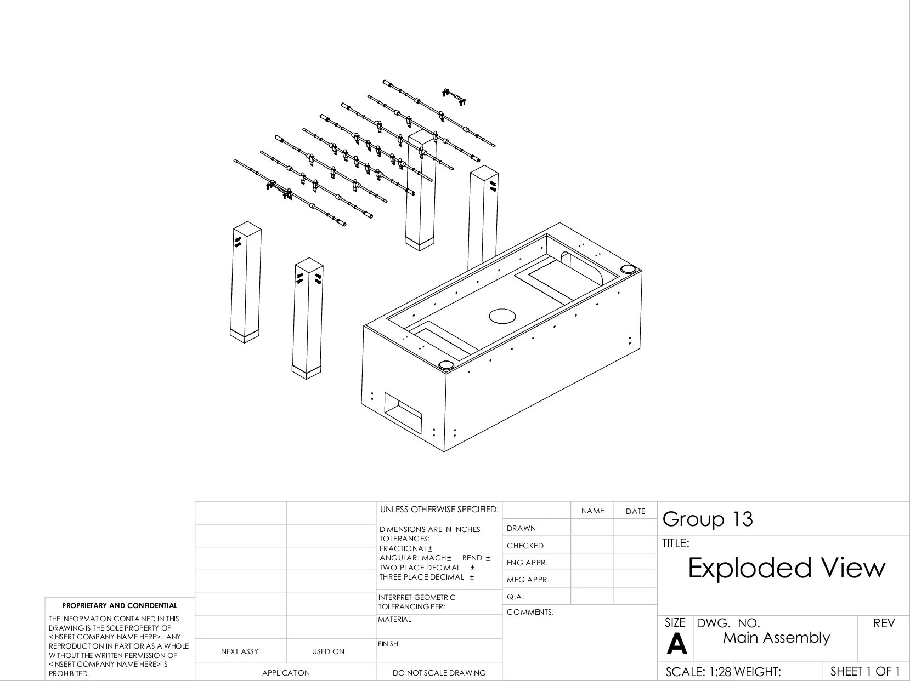
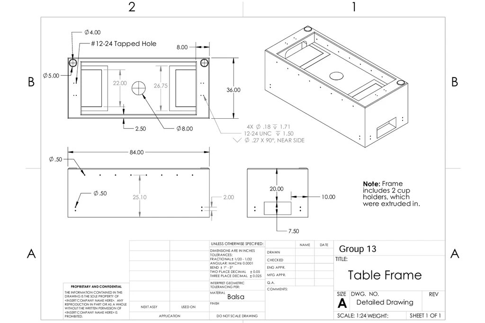
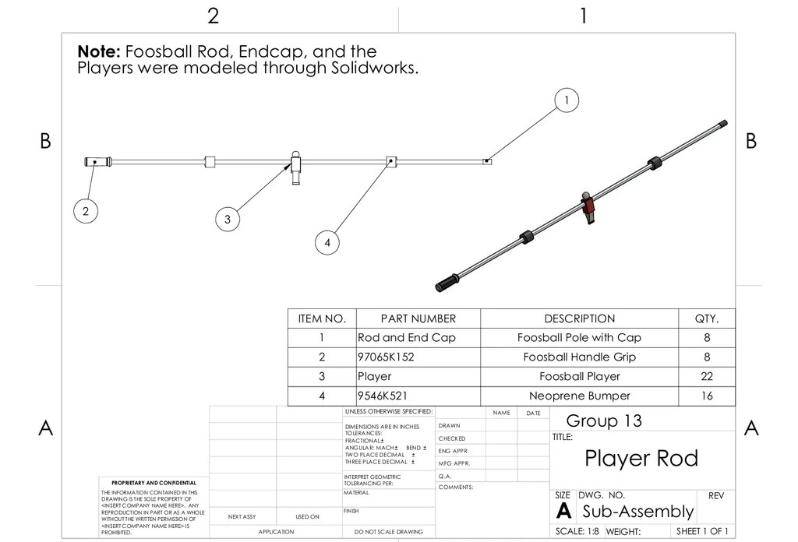

SolidWorksGD&T / ASME Y14.5Assembly Design
Technical DrawingsBOMDFM
Overview
A collection of CAD design work demonstrating proficiency in SolidWorks, full drawing packages per ASME Y14.5 GD&T standards, and assembly design with BOM documentation. The featured project is a complete mechanical design of a foosball table — from concept through fabrication-ready drawings.
Manufacturing Relevance
I keep this older CAD project in the portfolio because it shows the same habits that matter in manufacturing equipment work: standard hardware selection, drawing clarity, BOM discipline, assembly sequencing, and intentional tolerancing. The project is less about the object itself and more about whether someone else could build from the package.
Foosball Table — Full Design Package

Main assembly drawing with full BOM — 10 line items, part numbers, quantities

Exploded view drawing — Scale 1:28

Table frame detail drawing — balsa, 84" × 36", #12-24 tapped holes, cup holders

Player rod sub-assembly — foosball pole, grip, players, neoprene bumpers
- Complete main assembly with 10-item BOM including standard hardware sourced from McMaster-Carr (part numbers included)
- Exploded view drawing at Scale 1:28 showing assembly sequence
- Table frame detailed with all critical dimensions, tapped holes, and tolerances — fractional ±1/20–1/32", angular ±0.0001°, two/three-place decimal per ASME
- Player rod sub-assembly modeled including neoprene bumpers, handle grips, and needle-roller thrust bearings
- All parts modeled in SolidWorks; drawings produced to ASME Y14.5 GD&T standard
Lessons Learned
A drawing is a manufacturing contract
Every dimension and tolerance on a drawing is a commitment to the machinist. Under-tolerancing creates parts that don't fit; over-tolerancing drives up cost unnecessarily. Learning to apply GD&T intentionally — not just to pass a course — meant understanding what each callout actually controls on the manufactured part.
Source hardware before you model it
I modeled a custom needle-roller thrust bearing before checking McMaster-Carr. The standard part was cheaper, available next day, and already had a CAD model. Default to standard hardware and only go custom when you have to.